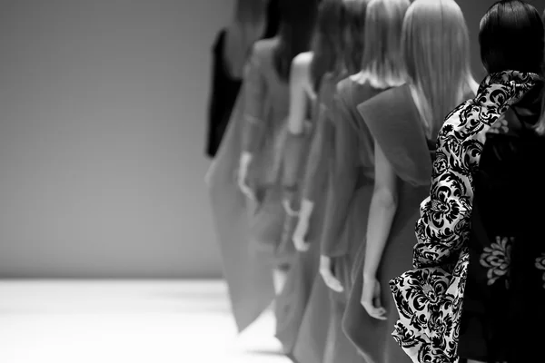

 (26).jpeg)
.jpeg)
Cada traço, textura e detalhe revelam, sutilmente,
a essência de quem sabe se destacar sem jamais precisar se explicar.
A moda contemporânea feminina vai muito além de tendências passageiras; ela representa a liberdade de escolha, a diversidade e a expressão da identidade.
Em constante evolução, ela acompanha as mudanças sociais, culturais e tecnológicas, refletindo os desejos e necessidades da mulher atual.
A moda contemporânea reflete diversidade; a liberdade
de se expor e a quebra
de velhos padrões. A
busca pelo realce
deixa que cada um
mostre sua forma
na forma de seu ser.
Tendenciando o palco
para a rua. Além disso,
o entrelace de estilo com sofisticação revela o ideal que
uma moda à frente de seu tempo precisa.
Um aspecto marcante da moda nova é a valorização da inclusão.
Marcas têm nos apresentado coleções para diferentes corpos.
Promovendo uma representatividade cada vez maior no mercado.
Assim, a moda nova não é apenas estética.
Mas também um meio de comunicação e transformação social.
A elegância dela é sutil, quase etérea, carregada de uma melancolia delicada que se revela em cada gesto contido. Há uma beleza serena em sua postura, como se guardasse histórias não contadas e sentimentos profundos sob a superfície. Essa combinação de graça e tristeza confere a ela uma aura única, onde a sofisticação encontra a emoção, criando um charme que toca quem a observa de maneira silenciosa e inesquecível.